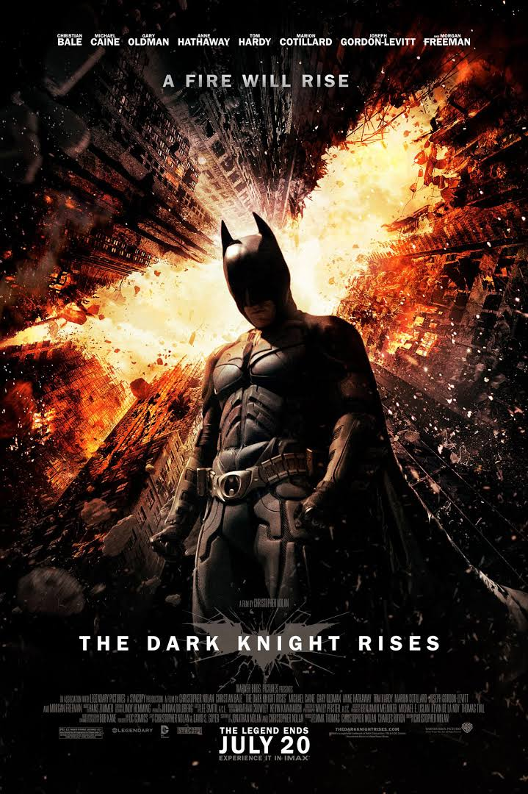

It has been eight years since the unfortunate passing of Harvey Dent, Gotham’s charismatic District Attorney. Gotham City is now a much quieter, more peaceful place due to Batman’s efforts and the Dent Act, a government decree that gives police officers considerable leverage over organized crime---Harvey Dent’s legacy to Gotham. Batman has all but disappeared from the city following the events before Dent’s death. Unbeknownst to the rest of the populace Commissioner James Gordon has been covering up for Dent’s psychotic rampage as his dark alter-ego Two-Face, who was created by the trauma inflicted upon him by the Joker, by pinning the blame on Batman. This was a plan devised by both Batman, as he wanted Dent to be remembered as a heroic defender of justice and not a psychopathic monster. Gordon however is wracked with guilt with trying to maintain the farce and prepares to resign but does not carry it out, deciding that it is an inappropriate time to leave the force.
The situation for Bruce Wayne isn’t all that pleasant either. He has begun to live his life as a complete hermit, refusing to see anyone, neglecting to even groom himself. He is still crushed by the death of his beloved Rachel Dawes. Financially, he is faring no better as the Wayne Enterprises has begun to lose profits after terminating a major project for alternative energy. The fusion reactor project his company was working was shelved after he learned that it could be used as a weapon. While Bruce Wayne mopes in his mansion, expert cat burglar Selina Kyle infiltrates Wayne Manor and abducts Congressman Byron Gilley as well as samples of Bruce’s fingerprints. The fingerprints are sold to Wayne Enterprises’ biggest rival John Daggett in exchange for the “Clean Slate” program, a computer program designed to locate and delete all criminal records stored in law enforcement databases.

Daggett betrays Selina at the agreed tradeoff, but she manages to call the police using Cong. Gilley’s phone. The authorities arrive and rescue the congressman and give Daggett’s men chase into the sewers. Selina escapes during the confusion. Daggett’s men turn out to be loyal to Bane, an ex-member of the League of Shadows, who has been establishing his operations underneath Gotham undetected. Gordon and the rest of his men are captured then taken to Bane for questioning. Commissioner Gordon manages to get away and is located by newbie officer John Blake. Officer Blake is a resourceful, streetwise policeman with remarkable deduction skills. He determines that Bruce Wayne may have connections or might himself be the Batman and he compels him to take up the mantle once more making an emotional appeal as a fellow orphan. Whilst Bruce Wayne resolves his internal conflicts Bane strikes, attacking the Gotham Stock Exchange. He uses the fingerprints stolen by Selina Kyle to make a transaction that impoverishes Bruce Wayne. Bane then proceeds to cut loose ends, killing Daggett. In Wayne Manor a worn-out Alfred Pennyworth, the Wayne Family’s butler and Bruce’s only family has all but given up on his charge. He divulges the painful truth to Bruce that prior to Rachel’s death she had plans to marry Dent. He then resigns from his duties to the Wayne Family in an effort to push Bruce out his rut and move on. He manages to move on taking comfort in the arms of the new CEO of Wayne Enterprises, Miranda Tate.